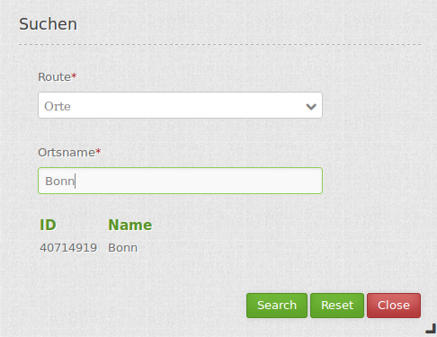

Search Router¶
Search frontend GUI for plugable search engine modules. Right now a generic SQL search engine is provided, with more to come (think Lucene enhanced search, etc.)
{kind=link}
Configuration¶

The SearchRouter needs access to the database where the search tables are. You have to define a new database configuration to be able to connect with the geo database. Read more about this at http://doc.mapbender3.org/en/book/database.html
Note: For the use of the below-described search the digitizer tables can be used. The SQL to create the tables can be found at Digitizer.
- Title: Title of the element. The title will be listed in “Layouts” and allows to distinguish between different buttons. It will be indicated if “Show label” is activated.
- Target: Id of Map element to query.
- Dialog: Render inside a dialog or not.
- Timeout factor: Timeout factor (multiplied with autcomplete delay) to prevent autocomplete right after a search has been started.
- Width: Width of the dialog (only for dialog, not sidepane)
- Height: Height of the dialog (only for dialog, not sidepane)
- Routes: Collection of search routes.
You can define Searches (Routes) with the + Button. Each Search has a title which will show up in the search form in a selectbox where you can choose the search you want to use. The definition of the search is done in YAML syntax in the textarea configuration. Here you define the database connection, the Search tables/views, the design of the form and of the result table.
Example of a route-configuration in the configuration area:
class: Mapbender\CoreBundle\Component\SQLSearchEngine
class_options:
connection: search_db
relation: ortschaften
attributes:
- gid
- ortsname
geometry_attribute: geom
form:
ortsname:
type: text
options:
required: true
compare: exact
results:
view: table
count: true
headers:
gid: ID
ortsname: Name
callback:
event: click
options:
buffer: 10
minScale: null
maxScale: null
YAML-Definition¶
For mapbender.yml:
target: map # for result visualization
asDialog: true # render inside a dialog or not
timeoutFactor: 3 # timeout factor (multiplied with autcomplete delay) to prevent autocomplete right after a search has been started
height: 500 # height of the dialog
width: 700 # width of the dialog
routes: # collection of search routes
demo_polygon: # machine readable name
class: Mapbender\CoreBundle\Component\SQLSearchEngine # Search engine to use
class_options: # these are forwarded to the search engine
connection: search_db # search_db # DBAL connection name to use, use ~ for the default one
relation: polygons # Relation to select from, you can use subqueries
attributes:
- gid # array of columns to select, expressions are possible
- name
- type
geometry_attribute: geom # name of the geometry column to query. Note: projection of geom has to be the same as map-Element projection
form: # search form configuration
name: # field name, use relation column name to query or anything else for splitted fields (see below)
type: text # field type, usually text or integer
options: # field options
required: false # HTML5 required attribute
label: Name # Enter a custom label, otherwise the label will be derived off the field name
attr: # HTML attributes to inject
data-autocomplete: on # this triggers autocomplete
data-autocomplete-distinct: on # This forces DISTINCT select
data-autocomplete-using: type # komma separierte Liste von anderen Eingabefeldern, in denen WHERE Angaben für die Autovervollständigung gemacht werden
compare: ilike # See note below for compare modes
type:
type: choice
options:
empty_value: Please select a type.
required: false
choices:
A: A
B: B
C: C
D: D
E: E
results:
view: table # only result view type for now
count: true # show number of results
headers: # hash of table headers and the corresponding result columns
gid: ID # column name -> header label
name: Name
type: Type
callback: # What to do on hover/click
event: click # result row event to listen for (click or mouseover)
options:
buffer: 10
minScale: ~ # scale restrictions for zooming, ~ for none
maxScale: ~
results:
styleMap: # See below
default:
strokeColor: '#00ff00'
strokeOpacity: 1
fillOpacity: 0
select:
strokeColor: '#ff0000'
fillColor: '#ff0000'
fillOpacity: 0.4
You need a button to show this element. See Button for inherited configuration options.
Compare modes¶
Each field can be assigned a compare mode which is evaluated by the engine when building the search query. The SQL search engine has the following modes:
- exact: exact comparison (key = val)
- iexact: case-insensitive comparison
- like: default, uses two-sided like
- like-left: uses left-sided like
- like-right: uses right-sided like
- ilike: uses two-sided case-insensitive like (searchstring)
- ilike-left: uses left-sided case-insensitive like (f.e searchstring)
- ilike-right: uses right-sided case-insensitive like (f.e searchstring*)
Result feature styling¶
By default, the result features are styled using the default styles OpenLayers provides. This gives the well-known orange look and blue look for the selected feature. If you want to override that, you can provide a styleMap configuration for the results like this:
results:
styleMap:
default:
fillOpacity: 0
select:
fillOpacity: 0.4
This will not draw polygon interiors, but only their outlines in default mode. The selected feature will have it’s interior drawn with 60% transparency.
The default style properties will override the properties OpenLayers uses for the default style, therefore you only need to set properties you wish to change. If you omit the default part, OpenLayers default style will be used as is.
A similar logic applies to the select style – any property you provide will override the corresponding property of the final default style. Therefore the example above will not yield a blue look for the selected feature!
Keep in mind to quote hex color codes as the pound sign will otherwise be treated as a inline comment!
A more elaborate example with green (hollow) features and the selected one in red:
results:
styleMap:
default:
strokeColor: '#00ff00'
strokeOpacity: 1
fillOpacity: 0
select:
strokeColor: '#ff0000'
fillColor: '#ff0000'
fillOpacity: 0.4
Class, Widget & Style¶
- Class: Mapbender\CoreBundle\Element\SearchRouter
- Widget: mapbender.element.searchRouter.js, mapbender.element.searchRouter.Feature.js, mapbender.element.searchRouter.Search.js
- Style: mapbender.element.searchRouter.css
HTTP Callbacks¶
<route_id>/autocomplete¶
Autocomplete Ajax endpoint for given search route. Autocomplete is implemented using Backbone.js with the Mapbender.Autocomplete model implemented in mapbender.element.searchRouter.Search.js.
<route_id>/search¶
Search Ajax endpoint for given search route. Search is implemented using Backbone.js with the Mapbender.Search model implemented in mapbender.element.searchRouter.Search.js.
JavaScript Signals¶
None.
Example¶
Example with autocomplete and individual result style:
Create or Replace view brd.qry_gn250_p_ortslage as Select gid, name, gemeinde, bundesland, oba, ewz_ger, hoehe_ger ,geom from brd.gn250_p where oba = 'AX_Ortslage' order by name;
class: Mapbender\CoreBundle\Component\SQLSearchEngine
class_options:
connection: search_db
relation: brd.qry_gn250_p_ortslage
attributes:
- gid
- name
- gemeinde
- bundesland
- ewz_ger
- hoehe_ger
geometry_attribute: geom
form:
name:
type: text
options:
required: false
label: Name
attr:
data-autocomplete: on
compare: ilike
gemeinde:
type: text
options:
required: false
compare: ilike
results:
view: table
count: true
headers:
name: Name
gemeinde: Gemeinde
bundesland: Bundesland
ewz_ger: Einwohner
hoehe_ger: Höhe
callback:
event: click
options:
buffer: 1000
minScale: null
maxScale: null
styleMap:
default:
strokeColor: '#00ff00'
strokeOpacity: 1
fillOpacity: 0
select:
strokeColor: '#ff0000'
fillColor: '#ff0000'
fillOpacity: 0.8
Example with selectbox:
Create or Replace view brd.qry_gn250_p as Select gid, name, gemeinde, bundesland, oba, geom from brd.gn250_p where oba = 'AX_Ortslage' OR oba = 'AX_Wasserlauf' order by name;
class: Mapbender\CoreBundle\Component\SQLSearchEngine
class_options:
connection: search_db
relation: brd.qry_gn250_p_ortslage
attributes:
- gid
- name
- gemeinde
- bundesland
- oba
geometry_attribute: geom
form:
oba:
type: choice
options:
empty_value: 'Bitte wählen...'
choices:
AX_Ortslage: Ort
AX_Wasserlauf: 'Gewässer'
name:
type: text
options:
required: false
label: Name
attr:
data-autocomplete: on
compare: ilike
gemeinde:
type: text
options:
required: false
compare: ilike
results:
view: table
count: true
headers:
name: Name
gemeinde: Gemeinde
bundesland: Bundesland
callback:
event: click
options:
buffer: 1000
minScale: null
maxScale: null